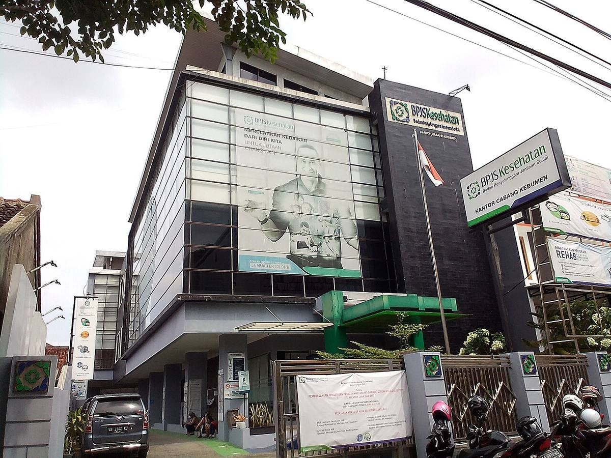

Cara cek BPJS Kesehatan aktif atau tidak paling cepat adalah membuka menu Info Peserta di aplikasi Mobile JKN. Kalau tidak mau memasang aplikasi, kirim WhatsApp ke PANDAWA di 0811-8165-165 atau telepon Care Center 165. Ketiganya cuma butuh NIK dan tanggal lahir, gratis, dan hasilnya keluar dalam beberapa menit.
Jawaban singkat: Buka aplikasi Mobile JKN, masuk dengan NIK atau nomor kartu, lalu ketuk menu Info Peserta. Di sana tertulis status kepesertaan kamu, aktif atau tidak aktif. Kalau belum punya aplikasi, kirim pesan "Halo" ke WhatsApp PANDAWA di 0811-8165-165, pilih menu cek status kepesertaan, lalu ketik NIK dan tanggal lahir. Cara lain, telepon 165 dari HP mana pun dan ikuti menu suara. Semua kanal membaca data yang sama dari sistem BPJS Kesehatan, jadi hasilnya tidak berbeda. Yang penting, cek status sebelum berobat. Kartu bisa berubah jadi nonaktif tanpa pemberitahuan, misalnya karena iuran menunggak atau karena namamu dicoret dari daftar penerima bantuan. Per November 2026, pengecekan lewat ketiga kanal resmi ini gratis, kecuali pulsa untuk telepon 165.
Apa yang Perlu Disiapkan Sebelum Mengecek?
Siapkan tiga hal supaya pengecekan tidak gagal di tengah jalan. Pertama, NIK 16 digit sesuai KTP atau Kartu Keluarga. Sejak 2022, NIK dipakai sebagai nomor identitas peserta JKN, jadi kamu tetap bisa mengecek walau lupa nomor kartu. Kedua, tanggal lahir sesuai KTP, karena PANDAWA dan Care Center 165 memakainya sebagai verifikasi kedua. Ketiga, nomor HP aktif untuk menerima kode OTP saat mendaftar akun Mobile JKN.
Nomor kartu BPJS, yang disebut nomor JKN, adalah deret 13 digit angka di kartu fisik atau KIS Digital. Jangan tertukar dengan NIK yang 16 digit. Kalau lupa nomor kartu, tidak masalah: ketiganya menampilkan nomor JKN bersama status kepesertaanmu.
Bagaimana Cara Cek BPJS Kesehatan lewat Mobile JKN?
Mobile JKN adalah aplikasi resmi BPJS Kesehatan, dan ini cara paling lengkap. Ikuti langkah ini:
- Unduh Mobile JKN dari toko aplikasi resmi, lalu buka dan ketuk Masuk atau Daftar.
- Pilih Masuk, pilih jenis identitas NIK atau nomor kartu, lalu isi kata sandi dan captcha.
- Di halaman utama, ketuk menu Info Peserta.
- Baca kolom status kepesertaan yang tampil di layar.
Belum punya akun? Ketuk Daftar, isi NIK, nama, tanggal lahir, dan captcha, lalu verifikasi dengan kode OTP yang dikirim lewat SMS. Pastikan nama ditulis persis seperti di KTP, tanpa singkatan atau gelar.
Bagaimana Cara Cek BPJS Kesehatan tanpa Aplikasi?
Pertama, WhatsApp PANDAWA di 0811-8165-165. PANDAWA adalah singkatan dari Pelayanan Administrasi melalui WhatsApp, layanan resmi BPJS Kesehatan. Simpan nomor itu, kirim pesan "Halo", pilih menu cek status kepesertaan, lalu ketik NIK dan tanggal lahir. Balasannya berisi nama peserta, segmen kepesertaan, dan keterangan aktif atau tidak aktif. Simpan nomor ini dengan nama "PANDAWA BPJS Kesehatan" supaya tidak tertukar dengan nomor palsu, dan jangan memakai nomor "PANDAWA" yang dikirim orang lewat grup atau komentar media sosial.
Kedua, telepon Care Center 165. Layanan ini aktif 24 jam setiap hari, termasuk hari libur, dan biayanya mengikuti tarif pulsa operator kamu. Telepon 165, ikuti menu suara, lalu masukkan NIK dan tanggal lahir lewat tombol angka.
Satu peringatan penting: hanya pakai domain resmi bpjs-kesehatan.go.id dan kanal resmi lain yang disebut di atas. Situs tiruan yang mengaku bisa "cek BPJS online" dan meminta foto KTP sebaiknya dihindari.
Bagaimana Cara Cek BPJS PBI dan Desil di Cek Bansos?
PBI Jaminan Kesehatan adalah BPJS gratis dari pemerintah, iurannya dibayar APBN lewat Kementerian Sosial. Statusnya tetap terlihat di Mobile JKN, PANDAWA, dan 165, sama seperti peserta lain. Tapi desilmu hanya bisa dicek di situs Cek Bansos Kemensos.
Buka cekbansos.kemensos.go.id di browser HP atau laptop, masukkan NIK 16 digit, ketik huruf kode yang tampil di kotak, lalu ketuk Cari Data. Desil 1 adalah kelompok keluarga dengan tingkat kesejahteraan terbawah, sedangkan desil 10 adalah kelompok teratas. Desil 1 sampai 5 menjadi sasaran PBI Jaminan Kesehatan. Kalau desilmu tercatat 6 ke atas, risiko dicoret dari PBI pada pemutakhiran berikutnya jauh lebih besar. Kalau angkanya tidak sesuai kondisi nyata, ajukan pembaruan lewat desa atau dinas sosial.
Kenapa BPJS Kesehatan Tiba-tiba Tidak Aktif?
Ini enam penyebab yang paling sering terjadi.
Pertama, iuran mandiri menunggak. Satu bulan tidak dibayar sampai akhir bulan sudah cukup membuat kartu nonaktif sejak tanggal 1 bulan berikutnya. Kedua, berhenti bekerja. Kantor berhenti membayar iuran begitu kamu resign, dan kartu anggota keluarga yang ikut didaftarkan kantor juga ikut nonaktif. Ketiga, perusahaan belum membayar iuran. Gajimu sudah dipotong, tapi iuran belum disetor kantor.
Keempat, dicoret dari PBI. Lewat SK Menteri Sosial Nomor 3/HUK/2026 yang berlaku 1 Februari 2026, sekitar 11 juta peserta PBI JK dinonaktifkan setelah validasi data DTSEN. Per 11 April 2026, Menteri Sosial melaporkan sekitar 2,15 juta peserta sudah aktif kembali. Kelima, domisili BPJS gratis dari Pemda berubah. Pindah ke kabupaten lain bisa membuat kepesertaan dari Pemda lama berakhir. Keenam, data kependudukan tidak padan, misalnya nomor KK berubah atau nama salah ketik.
Bagaimana Cara Mengaktifkan BPJS yang Tidak Aktif?
Peserta mandiri yang menunggak cukup melunasi tunggakan, paling banyak 24 bulan, ditambah iuran bulan berjalan. Status biasanya aktif kembali dalam 1x24 jam sesudah pembayaran terkonfirmasi. Kalau jumlahnya berat, tunggakan 4 sampai 24 bulan bisa dicicil lewat program REHAB di Mobile JKN, paling banyak 12 kali. Perhatikan dendanya: bila dalam 45 hari sesudah kartu aktif kembali kamu menjalani rawat inap, ada denda 5 persen dari biaya paket INA-CBG untuk setiap bulan tertunggak, paling tinggi Rp20 juta.
Karyawan yang resign bisa pindah ke segmen mandiri lewat menu Ubah Data Peserta di Mobile JKN. Karyawan yang terkena PHK tetap dijamin paling lama 6 bulan kelas III tanpa membayar iuran.
Peserta PBI yang dicoret tidak punya tunggakan untuk dilunasi, jadi reaktivasinya lewat pemerintah daerah. Cek desil di Cek Bansos, datang ke desa atau dinas sosial dengan KTP dan KK, dan bila sedang sakit, minta surat keterangan dari faskes atau rumah sakit. Seluruh proses ini tidak dipungut biaya. Tawaran "aktivasi kilat" berbayar adalah penipuan.

Foto: DARMAS BS 9, CC BY-SA 4.0, via Wikimedia Commons
Satu alasan terakhir untuk mengecek hari ini juga: status BPJS Kesehatan dicek otomatis saat kamu mengajukan SKCK online. Cek sekarang, supaya tidak ketahuan nonaktif justru saat kamu sudah sampai di meja pendaftaran faskes.
Baca juga: kalau kamu sedang mengurus dokumen lain, baca panduan membuat SKCK online, cek bansos lewat HP, dan mencairkan saldo JHT BPJS Ketenagakerjaan kalau kamu baru resign, serta perpanjang SIM C online kalau SIM kamu mau habis masa berlakunya. Lihat juga artikel Other lainnya.
Sumber dan Info Resmi
Angka, nomor layanan, dan aturan di artikel ini merujuk ke sumber berikut:
- Ahmadweb: cara tercepat lewat menu Info Peserta di Mobile JKN; PANDAWA 0811-8165-165; Care Center 165 aktif 24 jam; NIK 16 digit dipakai sebagai nomor identitas peserta sejak 2022; nomor JKN 13 digit; aturan nonaktif, tunggakan, REHAB, dan denda rawat inap; SK Mensos 3/HUK/2026; jaminan 6 bulan kelas III untuk peserta PHK; aktivasi BPJS tidak pernah dipungut biaya; desil 1 sampai 5 menjadi batas PBI dan reaktivasi; status BPJS dicek otomatis saat mengajukan SKCK online.
- Industry.co.id: lima metode cek BPJS Kesehatan 2026; nomor WA resmi 0811-8165-165; SMS ke 08777-5500-400; pengecekan lewat kanal resmi tidak dikenakan biaya.
- KlikFakta: empat kanal resmi, Mobile JKN, website bpjs-kesehatan.go.id, PANDAWA 0811-8165-165, dan call center 165; status aktif kembali umumnya dalam 1x24 jam sesudah pembayaran tunggakan terkonfirmasi.
- Tajuk Rakyat: Mobile JKN versi 5.2 dirilis Februari 2026; menu Status Kepesertaan menampilkan keterangan Aktif atau Non-aktif.
- Iuwashtangguh: indikator warna di Mobile JKN, hijau berarti aktif dan merah berarti non-aktif; status aktif kembali dalam 1x24 jam sesudah pembayaran berhasil.